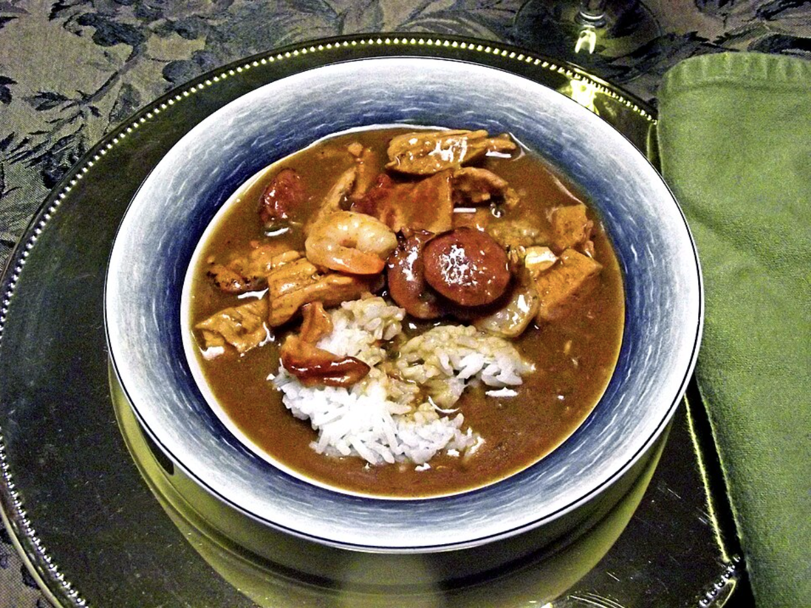

Gumbo
My father is from Louisiana. So, there should not be much explanation to why
this is important. Gumbo is one a food that is important to all people from
Louisiana because it is that famous there.
Gumbo does not have an exact ricipe. It is more like what you want in it.
- Making the roux is the most important part of making the gumbo. In
order to make it you must combine the flour and oil on low
heat and stir til you have a dark roux. The darker the
better, without burning it!
- Cook the sausage til it is brown on both sides.
- Add the broth and parsley to the roux. Stir well and skim off
any foam from the top. Stir in any seasoning that you want.
- Add the cooked meats add leave it in the pot for a while the
older it is, the better it is.
Serve warm on rice
